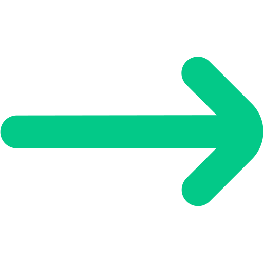

Desarrollador Junior Backend, con conocimientos en PHP, Laravel y bases de datos relacionales, además de, conocimientos en Frontend como HTML5/CSS3, JavaScript, TypeScript y metodologías ágiles.
He destacado por mi capacidad de autoaprendizaje, como a su vez la necesidad de enfrentarme a nuevos retos que potencien y demuestren mi potencial como desarrollador, siendo una persona con alta polivalencia, liderazgo y adaptable a cualquier equipo de trabajo.
Soy capaz de facilitar y optimizar los procesos que se lleven a cabo de manera fluida y profesional.
Cuando no me encuentro en la computadora, estaré con mis deliros de escritor de novelas de suspenso.
Ver más CV
Fundamentos de la Programación
Universidad Tecnológica de Pereira - Misión TICTecnólogo en Análisis y Desarrollo de Sistemas de Información
SENAScrum
Scrum Foundation Professional Certification SFPCCurso Fundamentos Typescript
PlatziLenguajes
PHP
JavaScript
TypeScript
SQL
Frameworks
Laravel
Jquery
Herramientas
Figma
Node
Git | GitHub
Excel
NextTopic (En desarrollo)
Plataforma para descubrir, compartir en comunidad. Explora una variedad de temas, conecta con otros usuarios y encuentra inspiración, por medio de publicaciones, artículos, etc
Taller Glory Store
Sistema de administración empresarial que abarca el control de trabajadores, clientes y el inventario. Permite generar facturas detalladas y cotizaciones precisas para agilizar las operaciones y mejorar la relación con los clientes, a su vez, los clientes puede comprar repuestos dentro del sistema.
Portafolio
¡Bienvenido a mi portafolio!.Descubre en mi portafolio cómo mi dedicación y habilidades contribuyen a proyectos exitosos y a un entorno de trabajo colaborativo.
Arca
Plataforma de gestión médica. Su objetivo es mejorar la eficiencia y eficacia en la gestión de los procesos médicos y administrativos, brindando herramientas para la gestión de citas médicas, diagnósticos y gestión de usuarios.